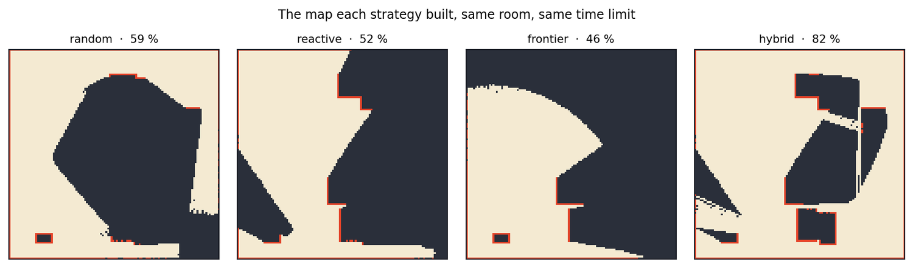
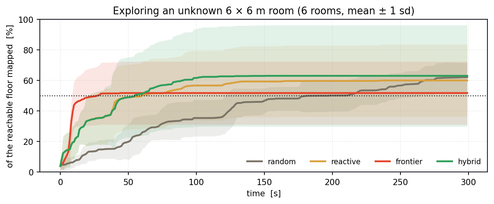
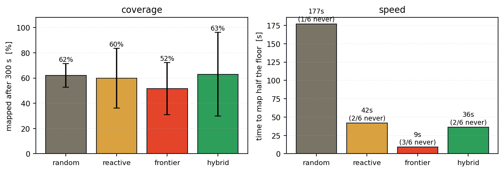

SLAM ◆ Autonomous exploration ◆ MIE443 ◆ University of Toronto ◆ 2022
A TurtleBot 2 is put in a 6 × 6 metre room it has never seen, with a Kinect, three bumpers, wheel odometry and a clock. It has to map as much of the floor as it can before the time runs out. That is the whole problem, and the interesting part is that the answer is not an algorithm — it is knowing when to switch between three of them.
The TurtleBot localising and navigating in the contest environment, with the map building in RViz alongside.
The robot below has the same sensors and the same four controllers: a 57° range scan, an occupancy grid updated by ray casting, and a differential base at 0.25 m/s. Cream is floor it has confirmed, red is obstacle it has seen, and dark grey is everything it still does not know. Pick a strategy and watch the grey get eaten.
Green is where it has been; the yellow wedge is what the Kinect can see right now. When frontier exploration is driving, the dashed yellow line is the path it planned to the nearest unmapped boundary.
The contest's actual question. Run it on whatever room you have set above — the seed and the obstacle count both change the answer, which is the point.
Press the button.
The classic taxonomy splits robot control three ways, and the contest controller uses all three because each fails somewhere the others do not.
Reactive control maps sensor straight to actuator with no state: a bumper closes, the wheels reverse. It is the fastest possible response and it is the only thing that can be trusted to prevent damage, so it sits at the bottom and can pre-empt everything above it.
Behaviour control keeps a little state and pursues a short-horizon goal — follow this wall, back away from that obstacle, turn towards open space. It is what the robot does most of the time.
Deliberate control builds a model and plans over it. Frontier exploration is the deliberate layer: take the occupancy grid, find the boundary between known-free and unknown, plan a path there, follow it. It is the only one of the three that can decide to cross the room.
The insight the contest forces on you is that the deliberate layer is not simply better. Frontier exploration needs a map to plan over, and at the start there is no map. Running it from the first second means planning to a frontier that is a metre away, arriving, and re-planning to one a metre beyond that — all the cost of a planner and none of the benefit.
So the controller starts in the behaviour layer, and watches its own progress:
The random walk gets a rough map cheaply. When it stalls — which it does, once it has seen everything within easy reach — the planner takes over precisely when it has something worth planning over. And when frontier exploration is defeated three times by the reactive layer (a "false frontier": a boundary that turns out to be unreachable), it hands control back.
The sensing has its own compromise worth recording. The Kinect returns a 2-D depth image; GMapping wants a laser scan. The controller takes a single horizontal slice from the middle of the image and treats it as a 1-D range array — throwing away almost all the depth data to fit an interface. It works, and it is also why a table edge at chest height is invisible to the map and only ever discovered by a bumper.

Six randomly generated rooms, 300 seconds each, all four controllers on every one, everything in scripts/tools/run_explore.py. I expected a ranking. What came out is more useful than a ranking.
| Strategy | mean coverage | spread (sd) | worst room | best room | time to half the floor |
|---|---|---|---|---|---|
| biased random walk | 62.1 % | ± 9.4 | 46.1 % | 71.5 % | 177 s (1/6 never) |
| reactive wall-following | 60.0 % | ± 23.7 | 25.6 % | 92.2 % | 42 s (2/6 never) |
| frontier exploration | 51.7 % | ± 20.7 | 13.2 % | 76.7 % | 9 s (3/6 never) |
| hybrid (the contest controller) | 63.0 % | ± 33.2 | 11.2 % | 99.2 % | 36 s (2/6 never) |
← swipe the table →
62.1 %, 60.0 %, 51.7 %, 63.0 % — across six rooms the four controllers are separated by less than their own standard deviations, and the hybrid's nominal win over a random walk is nine tenths of a percent. If the contest had been scored on one room, the winner would have been whichever robot got the lucky floor plan.
What actually separates them is consistency. The random walk has a spread of ±9.4 and never does better than 71.5 % or worse than 46.1 %. The hybrid has a spread of ±33.2, ranging from 11.2 % to 99.2 %. It is simultaneously the best controller and the worst one, depending on the room.
Look at where the hybrid fails. In rooms 3 and 4 it scores 11.2 % and 24.0 % while plain reactive wall-following — which is what the hybrid does until it decides otherwise — scores 71.2 % and 81.4 %. The hybrid did not lose because frontier exploration is bad. It lost because the stall detector fired while the behaviour layer was doing fine, handed control to a planner that then did worse, and the hybrid can only be as good as its worst decision about which mode to be in.
When the detector is right — rooms 0, 1, 2 and 5 — the hybrid beats every single-strategy controller, by up to 62 points. Composing controllers does not average their performance; it multiplies the best case and the worst case both.

The obvious implementation of frontier exploration — BFS from the robot to the nearest cell bordering unknown space, then drive there — does not work at all. The nearest such cell is always the one just past the edge of the current sensor footprint, five centimetres away. The robot arrives instantly, re-plans to another one five centimetres beyond that, and never travels anywhere. Naive nearest-frontier scored 13 % coverage against 70 % for a random walk.
Two changes fix it, and both are in the report if you read it carefully. Require the goal to be at least a body length away, so the planner is planning rather than twitching. And follow the planned path rather than driving at the goal in a straight line — the report says "a targeted frontier point and a path are calculated", and the path is the part that matters, because a straight line wedges on the first obstacle between here and there.

The sandbox runs assets/js/turtlebot_explore.js — the same grid resolution, field of view, speeds and four controllers as scripts/tools/explore.py. The ROS stack that ran on the real TurtleBot (GMapping, the bumper callbacks, the Kinect slice) is in the contest report; this harness reproduces the exploration logic rather than the ROS plumbing, because the exploration logic is what the contest was actually about.
MIE443: Mechatronics Systems Design and Integration at the University of Toronto. Contest 1 (autonomous exploration) with Maryam Hosseini, Yuntao Cai, Yicheng Wang and Qingyun (Ada) Yang; Contest 2 added object recognition and a CNN for seven-class emotion recognition.
The ROS controller, the state machine and the contest runs are from the course. The six-room study, the three findings above and the browser sandbox were built afterwards.